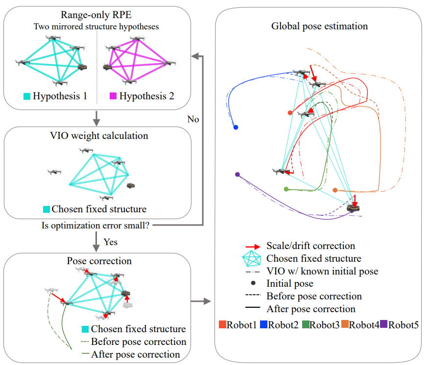

Jeewon KimI am a Robotics Researcher and a Ph.D. student in the Department of Electrical Engineering at KAIST (Korea Advanced Institute of Science and Technology), where I also received my B.S. degree. My research focuses on 3D Scene Graphs, Robust Robot Autonomy (Localization & Mapping), and intelligent robotic systems utilizing Vision-Language-Action (VLA) models. Email / GitHub / Google Scholar / LinkedIn
|
Academic Journey & Interests
|
Selected Publications |

|
TACS-Graphs: Traversability-aware Consistent Scene Graphs for Ground Robot Localization and MappingJeewon Kim, Minho Oh, Hyun Myung IROS 2025 (Accepted) |
|
|
Traversability-aware Consistent Situational Graphs for Indoor Localization and MappingJeewon Kim, Minho Oh, Hyun Myung RiTA 2024 (Accepted) |
|
|
Multi-Robot Control for Accurate Visual-Inertial-Range-Based LocalizationJeewon Kim, Junho Choi, Hyun Myung ICROS 2024 (Accepted) Best Paper Award 🏆 paper(in KOR) |
Contributed Work |
|
 |
SaWa-ML: Structure-Aware Pose Correction and Weight Adaptation-Based Robust Multi-Robot LocalizationJunho Choi, Kihwan Ryoo, Jeewon Kim, Taeyun Kim, Eungchang Lee, Myeongwoo Jeong, Kevin Christiansen Marsim, Hyungtae Lim, Hyun Myung IROS 2025 (Accepted) |
|
Design inspired by Jon Barron's website template and adapted for Jeewon Kim. |
Open to Collaboration!
Next step |